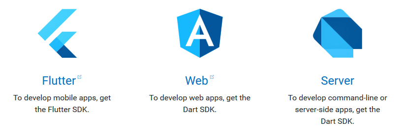

快速开发跨平台App的神器——Dart + Flutter
最近开始关注前端如何开发跨平台的App。有两个名词非常高频的暴露在视野中，稍作调研，很快就被惊艳到了，那就是Dart语言和Flutter移动UI框架。这两位新星来自于同一个爸爸，那就是Google。
下面简单的介绍一下这两位新星：
1、Dart
Dart亮相于2011年10月10至12日在丹麦奥尔胡斯举行的GOTO大会上。可以用于web、服务器、移动应用和物联网等领域的开发。

Dart是一种面向对象的、类定义的、单继承的语言，语法类似C语言，可以转译为JavaScript，支持接口(interfaces)、混入(mixins)、抽象类(abstract classes)、具体化泛型(reified generics)、可选类型(optional typing)和sound type system。Dart编程语言在所有现代的浏览器和环境中提供高性能。目前最新的版本是2018年2月发布的Dart2。以下是来自官网的几段代码示例，我们可以先看看它的风格：（本人觉得前端熟悉了ES6，学习Dart没有太大难度）
1 | // Define a function. |
1 | int fibonacci(int n) { |
1 | class Spacecraft { |
2、Flutter
Flutter是Google使用Dart语言开发的移动应用开发框架，使用Dart代码构建高性能、高保真的混合移动应用（这样你就可以编写一份代码，在 Android 和 iOS 都可以运行这个应用程序）。 最新的版本为Preview 1.0 。市面上已经有了很多跨平台解决方案， Xamarin、PhoneGap、Inoic、React Native 等等。我们有很多选择，它们也各有一些优点和缺点。
相比较其他的，Flutter主要解决了移动开发中的两个重要问题，一是原生应用程序的性能与平台的集成；二是提供多平台、可移植的UI工具包支持高效应用开发。另外，Flutter中UI组件和渲染器都从平台中集成到用户的应用程序中，所以原来虚拟的控件树是真实的控件树，所以渲染和绘制的速度会很快，动画发生在用户空间中，开发人员也可以对其进行很多的控制。
除此之外，在以下方面Flutter也有优势：
- 响应式视图，不需要JavaScript的桥接器
- 性能更好，兼容性更好
- 代码将AOT编译为本机(ARM)代码
- 美观，可定制的UI组件，开发人员完全控制UI组件和布局
- 强大的开发者工具，惊人的热重新加载
以下是Flutter的一个开发示例图：

以下是用Flutter开发的应用示例图：